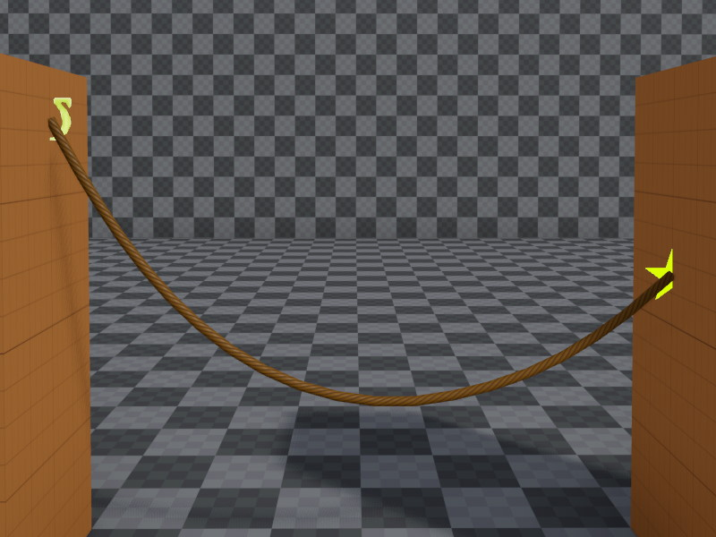

Fake Rope Component
The fake rope component is used to simulate simple cables, ropes and wires for decorative purposes.

These ropes are not able to pull on another object and thus can't be used as a gameplay element. Use the rope component for such use cases.
On the other hand, the fake rope component is more lightweight to simulate and is optimized to have very little overhead when it has reached a resting state (doesn't swing anymore). Therefore it can be used in larger quantities for decorative purposes.
Setting Up a Rope
A rope requires two anchor points between which it hangs. One anchor point is the rope object position itself, for the other one typically uses a dummy game object. The Anchor object reference is used to select which one to use.
In the object hierarchy it typically looks like this:

The position of the anchors can be moved in the 3D viewport to position the rope as desired. The shape of the simulated rope will be shown as a preview. Use the Slack property to make the rope sag.

Run the scene to see the final shape and behavior.
Rendering
With just the rope simulation component, you won't be able to see the rope, at all. You also need to attach a rope render component to the same game object.
Examples
The Testing Chambers project contains a dedicated Ropes scene with many examples.
Component Properties
Anchor: A reference to an object whose position determines where the rope ends.AttachToOrigin,AttachToAnchor: Whether the rope is fixed at the origin or anchor location. If the rope is not attached at one or both ends it is free to move away from there.Pieces: How many individual pieces the rope is made up of. More pieces look prettier, but cost more performance and may decrease the simulation stability.Slack: How much slack the rope has. A value of zero means the rope is hung perfectly straight between its anchors. Positive values make the rope sag downwards.Damping: How quickly the rope loses energy while swinging. Higher values make the rope come to rest more quickly, low values make the rope swing for a long time. Once a rope comes to rest, it takes significantly less processing power.WindInfluence: How strongly wind should make the rope swing. Be aware that having many swinging ropes costs a lot of performance.